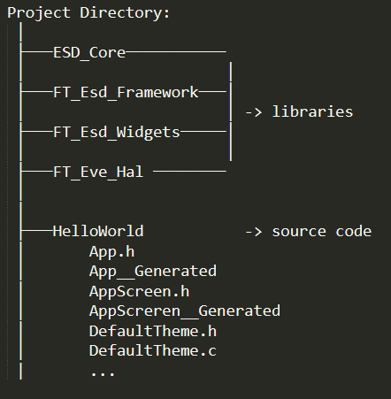

Structure of projects generated by ESD
In this chapter, we will explore the project structure, and the functions of key source code files required for integrating the rotary encoder/button encoder to manage hardware events.
Project Struture
The project “HelloWorld” generated by ESD is organized as below image:
In figure 3, we can see:
In the project directory, there are libraries such as ESD_Core, FT_Esd_Framework, FT_Esd_Widgets, and FT_eve_Hal. These should not be modified.
In the “HelloWorld” directory is source code.
Source code
The project source code is organized as follows:
The files App.h and App_Generated.c contain the main function that runs the application.
The files AppScreen.h and AppScreen_Generated.c, which can be considered the root pages, include the pages and widgets that will be displayed on the screen. AppScreen also contains a loop, AppScreen_Update, where we will check and manage hardware status.
Although other pages and widgets are capable of checking and handling hardware status individually, we should avoid doing so to prevent code duplication and excessive hardware status checks. If other pages or widgets need to handle hardware status, they should connect to a slot in AppScreen instead.